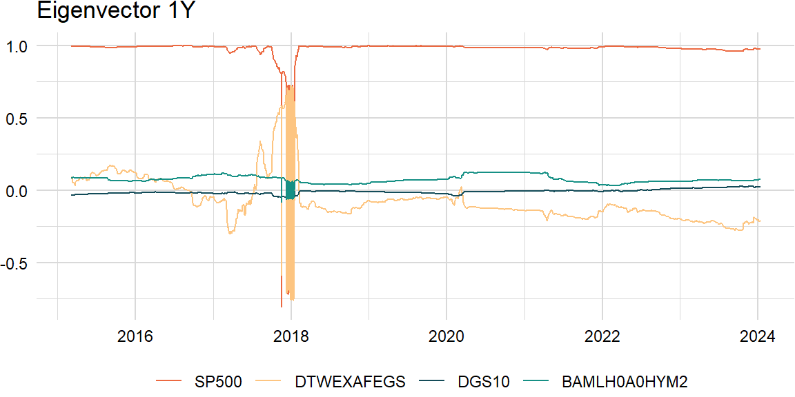

eigen_decomp <- function(x, comps) {
LV <- eigen(cov(x))
L <- LV$values[1:comps]
V <- LV$vectors[ , 1:comps]
result <- V %*% sweep(t(V), 1, L, "*")
return(result)
}Decomposition
Underlying returns are structural bets that can be analyzed through dimension reduction techniques such as principal components analysis (PCA). Most empirical studies apply PCA to a covariance matrix (note: for multi-asset portfolios, use the correlation matrix because asset-class variances are on different scales) of equity returns (yield changes) and find that movements in the equity markets (yield curve) can be explained by a subset of principal components. For example, the yield curve can be decomposed in terms of shift, twist, and butterfly, respectively.
\[ \begin{aligned} \boldsymbol{\Sigma}&=\lambda_{1}\mathbf{v}_{1}\mathbf{v}_{1}^\mathrm{T}+\lambda_{2}\mathbf{v}_{2}\mathbf{v}_{2}^\mathrm{T}+\cdots+\lambda_{k}\mathbf{v}_{k}\mathbf{v}_{k}^\mathrm{T}\\ &=V\Lambda V^{\mathrm{T}} \end{aligned} \]
comps <- 1eigen_decomp(overlap_xts, comps) * scale[["periods"]] * scale[["overlap"]] [,1] [,2] [,3] [,4]
[1,] 0.0300775965 -3.659506e-03 -1.572091e-04 2.578798e-03
[2,] -0.0036595055 4.452477e-04 1.912744e-05 -3.137594e-04
[3,] -0.0001572091 1.912744e-05 8.216978e-07 -1.347882e-05
[4,] 0.0025787985 -3.137594e-04 -1.347882e-05 2.211015e-04# cov(overlap_xts) * scale[["periods"]] * scale[["overlap"]]Variance
We often look at the proportion of variance explained by the first \(i\) principal components as an indication of how many components are needed.
\[ \begin{aligned} \frac{\sum_{j=1}^{i}{\lambda_{j}}}{\sum_{j=1}^{k}{\lambda_{j}}} \end{aligned} \]
variance_explained <- function(x) {
LV <- eigen(cov(x))
L <- LV$values
result <- cumsum(L) / sum(L)
return(result)
}variance_explained(overlap_xts)[1] 0.8733494 0.9922194 0.9982806 1.0000000Similarity
Also, a challenge of rolling PCA is to try to match the eigenvectors: may need to change the sign and order.
\[ \begin{aligned} \text{similarity}=\frac{\mathbf{v}_{t}\cdot\mathbf{v}_{t-1}}{\|\mathbf{v}_{t}\|\|\mathbf{v}_{t-1}\|} \end{aligned} \]
roll_eigen1 <- function(x, width, comp) {
n_rows <- nrow(x)
result_ls <- list()
for (i in width:n_rows) {
idx <- max(i - width + 1, 1):i
evec <- eigen(cov(x[idx, ]))[["vectors"]][ , comp]
result_ls <- append(result_ls, list(evec))
}
result <- do.call(rbind, result_ls)
result <- xts(result, index(x)[width:n_rows])
colnames(result) <- colnames(x)
return(result)
}comp <- 1raw_df <- roll_eigen1(overlap_xts, width, comp)# # install.packages("devtools")
# devtools::install_github("jjf234/rolleigen") # roll (>= 1.1.7)
# library(rolleigen)
# raw_df <- roll_eigen(overlap_xts, width)[["vectors"]][ , comp, ]
roll_eigen2 <- function(x, width, comp) {
n_rows <- nrow(x)
result_ls <- list()
for (i in width:n_rows) {
idx <- max(i - width + 1, 1):i
evecs <- eigen(cov(x[idx, ]))[["vectors"]]
if (i > width) {
similarity <- crossprod(evecs, result_ls[[length(result_ls)]])
order <- which.max(abs(similarity))
evec <- sign(similarity)[order] * evecs[ , order]
result_ls <- append(result_ls, list(evec))
} else {
result_ls <- append(result_ls, list(evecs[ , comp]))
}
}
result <- do.call(rbind, result_ls)
result <- xts(result, index(x)[width:n_rows])
colnames(result) <- colnames(x)
return(result)
}clean_df <- roll_eigen2(overlap_xts, width, comp)